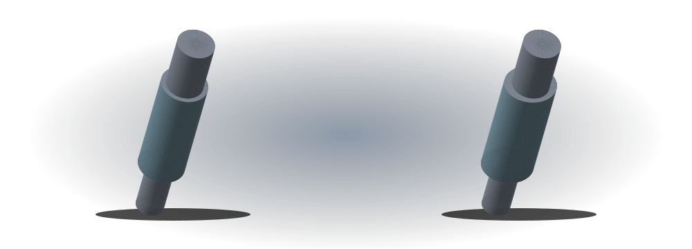

SLEECH / Teaching tools
One shape. Different measurements.
A shaft, bushing and disk. Compare nominal geometry with illustrative ovality. All dimensions are fictional; this explains geometry rather than reporting laboratory results.

Canvas is unavailable. Use the numeric controls and explanations.
Mouse: drag. Phone: swipe horizontally; use the slider for tilt. Keyboard: arrows, +, −, Home.
The cross-section width in the selected direction. Camera rotation does not change it. U is not calculated here.
Why readings can differ
Illustrative ovality is 11 μm. From 0° to 90°, width changes by 0.011 mm. Different points and directions may produce different readings on the same part. A real comparison requires an agreed method, shared conditions and an uncertainty assessment.
| Part | Nominal mm | Major diameter mm | Minor diameter mm | Length mm | Bore mm |
|---|---|---|---|---|---|
| Shaft | 20 | 20.012 | 20.001 | 100 | — |
| Bushing | 20 | 20.012 | 20.001 | 25 | 20 |
| Disk | 40 | 40.012 | 40.001 | 8 | 14 |
The shaft’s middle step, the bushing’s bore and the disk’s outer diameter are compared. The 250× mode amplifies only shape deviation; labels and JSON retain the true teaching dimensions. This is not a manufacturing drawing. No tolerance or fitness is determined.